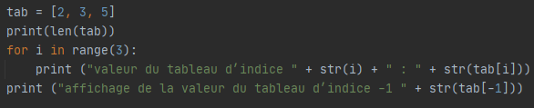
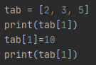
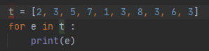

Un tableau permet de stocker plusieurs valeurs dans une seule variable et d’y accéder ensuite facilement.
Soit le programme suivant :
Exécutez le programme suivant et observez.
On obtient la taille du tableau t avec l’opération len(t)
Pour accéder à une valeur contenue dans le tableau t, il faut utiliser la notation t[i] où i désigne le numéro de la case à laquelle on veut accéder.
Les cases sont numérotées à partir de zéro. Ainsi, la valeur contenue dans la première case est t[0].
En Python, la case d’indice -1 est la dernière du tableau.
Soit le programme suivant :
Quel est le résultat attendu après l'exécution de ce programme ? Vérifiez votre réponse en testant le programme.
Soit le programme suivant :
Tester ce programme et observer le résultat.
Par quel programme utilisant une syntaxe déjà connue peut-on le remplacer ?
On peut parcourir les éléments d’un tableau avec la construction for e in t où e est une variable qui va recevoir successivement tous les éléments de t.
L’itération directe sur les éléments du tableau correspond à une vision un peu plus abstraite.
Le tableau est ici ramené à une collection d’éléments dans lequel on a masqué le fait que chaque élément était associé à un indice i.
Cette forme est plus simple à lire et à écrire, mais n’est applicable que lorsqu’on n’a pas besoin d’utiliser l’indice i.
Ecrire une fonction qui renvoie la valeur maximale d’un tableau en utilisant la construction précédente.